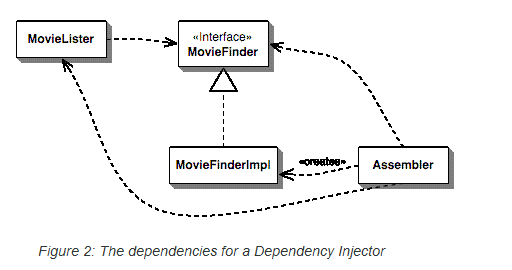
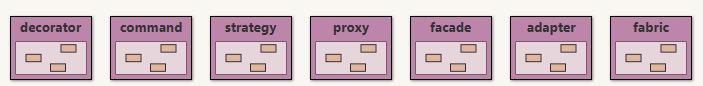
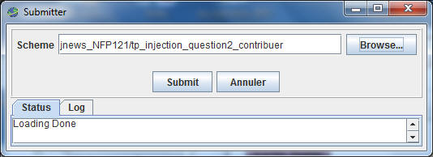

Le framework femtoContainer
Le framework femtoContainerPréambule: lire, étudier l'article de Martin Fowler
http://www.martinfowler.com/articles/injection.html
Ce TP est accompagné d'une séance d'exercices dirigés sur le même thème
cf. ed injection_dependances_IoC
Dans le paragraphe Setter Injection with Spring l'auteur, Martin Fowler, présente un exemple de configuration de classes à l'aide du framework Spring. L'exemple de l'article effectue une recherche d'un titre de film à l'aide du nom du réalisateur, la liste des films peut se présenter selon plusieurs formats: du fichier texte au format CSV ou avec d'autres séparateurs ou encore en base de données ou bien sur le web.

L'usage d'un framework de configuration, comme Spring, permet de s'affranchir du format de la liste des films, ce choix étant déterminé au moment de l'exécution depuis un fichier de configuration. Une séparation claire est ainsi effectuée entre la configuration des classes et leur utilisation.
Le fichier de configuration Spring est en XML (spring.xml) :
<beans>
<bean id="MovieLister" class="spring.MovieLister">
<property name="finder">
<ref local="MovieFinder"/> <-- ce sera un "bean" défini dans le même contexte </property> </bean> <bean id="MovieFinder" class="spring.ColonMovieFinder"> <-- le format du fichier est indiqué ici
<property name="filename">
<value>movies1.txt</value>
</property>
</bean>
</beans>
La lecture de ce fichier indique, que nous avons deux beans :
- MovieLister et MovieFinder
- dont les propriétés sont respectivement finder et filename,
- les mutateurs(setter) associés sont exécutés par Spring : setFinder et setFilename, avec les paramètres indiqués.
En java, ci-dessous l'usage de Spring, extrait de l'article :
public void testWithSpring() throws Exception {
ApplicationContext ctx = new FileSystemXmlApplicationContext("spring.xml");
MovieLister lister = (MovieLister) ctx.getBean("MovieLister");
Movie[] movies = lister.moviesDirectedBy("Sergio Leone");
assertEquals("Once Upon a Time in the West", movies[0].getTitle());
}
Nous souhaitons utiliser un framework analogue, mais simplifié, développé pour cette unité, basé, comme Spring, sur l'injection de dépendances par les mutateurs(setter), les mêmes noms de classe ou d'interface ApplicationContext et noms de méthode getBean, getType ont été repris depuis Spring.
Dans la suite de cet énoncé, nous nommerons ce framework : femtoContainer http://jfod.cnam.fr/progAvancee/femto_container_distrib_bluej.jar cette archive est un projet bluej autonome, celui-ci contient plusieurs exemples dont quelques patrons de conception ainsi qu'une interface graphique d'aide à l'édition des fichiers de configuration,
Note: femtoContainer est normalement inclus dans votre projet tp_injection, nul ajout n'est nécessaire.
L'exécution de la méthode main de la classe nommée
ConfigurationIHM déclenche une interface graphique qui pourrait
vous être utile pour la réalisation des fichiers de configuration ( interface perfectible...)
Un
exemple Proposez un exemple, de votre choix, de l'utilisation de l'injection de dépendances.
Cet exemple doit être accompagné d'une classe de tests unitaires, celui-ci sera intégré à la prochaine version de femtoContainer.
Utilisez JNEWS afin de déposer cet exemple, menu Outils, item submit..., Scheme tp_injection_question1_deposer

 Un
patron et son utilisation
Un
patron et son utilisationProposez un patron de conception, un exemple d'utilisation, une classe de tests unitaires. un patron de votre choix parmi les 16 (23-7) de votre aide mémoire, -7: en excluant les exemples présents dans femtoContainer, soient :

Les exemples de ces 7 patrons avec femtoContainer peuvent vous être utiles, et sont bien entendu perfectibles...
Utiliser JNEWS afin de déposer vos contributions, menu Outils, item submit..., Scheme tp_injection_question2_contribuer

 Usage
du patron ServiceLocator
Usage
du patron ServiceLocatorL'exemple de la questions1 et le patron de la question 2 sont maintenant accessibles via une instance du patron ServiceLocator,
Vérifiez la configuration (./question3/README.TXT) et enrichissez la classe de tests unitaires en conséquence (./question3/ServiceLocatorTests.java)...
N'oubliez pas d'utiliser JNEWS afin de déposer vos contribution, menu Outils, item submit..., Scheme tp_injection_question3_contribuer
FemtoContainer est bien entendu perfectible, tout ajout, toutes modifications sont les bienvenus et seront intégrés, à l'outil pour l'an prochain.
Les traces en mode verbeux, l'exécution possible par introspection de n'importe quelle méthode, la gestion des erreurs issue d'un fichier de configuration mal formé pourrait être améliorée.
Un autre format du fichier de configuration XML, JSON ... peut aussi être proposé. L'interface graphique engendrant le fichier de configuration XML ou JSON pourrait, elle aussi être enrichie ou réécrite.
JSON : à l'aide de cette librairie par exemple,
voir
https://www.jmdoudoux.fr/java/dej/chap-gson.htm